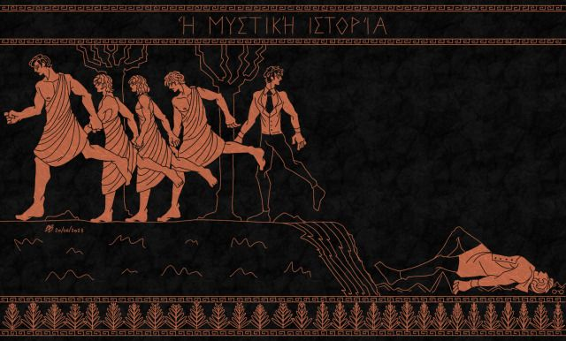

Донна Тартт — мастер создания атмосферных, глубоких и завораживающих романов, и «Тайная история» — её дебютное произведение, ставшее настоящей литературной сенсацией. Этот роман — не просто детектив и не просто психологическая драма. Это нечто большее: мрачное, интеллектуальное исследование человеческой натуры, амбиций и границ дозволенного.
Сюжет завязывается вокруг Ричарда Пейпена, студента элитного колледжа Хэмпден, который попадает в закрытый круг избранных учеников харизматичного профессора древнегреческого. Восхищение красотой эллинистической культуры, таинственность их мира и отчуждённость от остального студенчества создают ощущение почти мифического братства. Однако идиллия оказывается хрупкой, а в воздухе постепенно сгущается напряжение. И вскоре граница между нравственным и безнравственным, между учёностью и фанатизмом стирается, а последствия оказываются непредсказуемыми.
Что делает «Тайную историю» по-настоящему уникальной? В первую очередь, атмосфера. Тартт виртуозно передаёт дух осенних кампусов, ночных дискуссий, винтажной эстетики и запретного знания. Её герои сложны, противоречивы и пугающе реалистичны — их невозможно назвать ни чистыми злодеями, ни идеальными героями. Они умны, талантливы, но в каждом из них есть нечто тревожное. Книга написана завораживающим языком, пропитанным отсылками к классической литературе и философии, и оставляет после себя не только впечатление, но и множество вопросов.
«Тайная история» — это роман, который погружает в атмосферу интриги, заставляет задуматься о природе человеческих поступков и удерживает в напряжении до последней страницы. Это книга, которая не только рассказывает историю, но и заставляет пережить её. Если вам нравятся интеллектуальные романы с готическим налётом, сложными персонажами и глубокой философией, «Тайная история» станет для вас идеальным выбором.